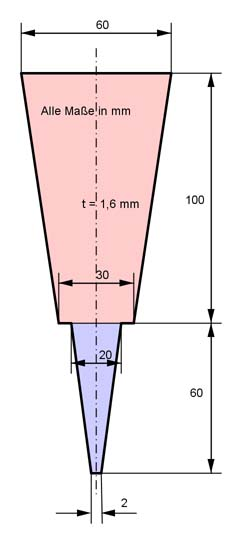

Aufgabe 97 Welche Masse m haben 100 der dargestellten Stahlspachteln mit einer Dichte von 7,85 g/cm³?  Die Grundfläche G besteht aus den Trapezen T1 (rot) und T2 (blau). 60 mm + 30 mm T1 = ---------------- * 100 mm = 4 500 mm² 2 20 mm + 2 mm T2 = -------------------- * 60 mm = 660 mm² 2 G = 4 500 mm² + 660 mm² = 5 160 mm² V = G * t = 5 160 mm² * 1,6 mm = 8 256 mm³ = 8,256 cm³ m = 100 * V * р = 100 * 8,256 cm³ * 7,85 g/cm³ = 6 481 g = 6,48 kg